Hardware view for digital pins
Select a digital pin in the Pin Browser view, the Hardware view shows the current state of the pin hardware. In the Hardware view, you can make the following changes:
- Click a relay in the schematic to change the state of the relay.
- Change the settings for the following components as described below.
- Driver
- Clamp
- Comparator
- Termination (TERM)
- Pin PMU
- Board ADC (BADC)
Multi-Site considerations
When using the Hardware perspective for debugging multi-site test setups, use the focus button in the Site Control window to select a particular site. (See Using the site control). When you click a pin in the pin browser, the hardware view will indicate the site number that is currently in focus and any changes you make to the settings using the Hardware View will apply only to that site. To change settings for the same pin at a different site, click the focus button in the Site Control window for the new site and then click the pin again in the Pin Browser. The new site number will be indicated at top of the diagram.

Differential pins
For pins that can be used in differential mode (for example Pin Scale receiver) the corresponding neighboring channel is indicated as shown at the bottom of the figure below.
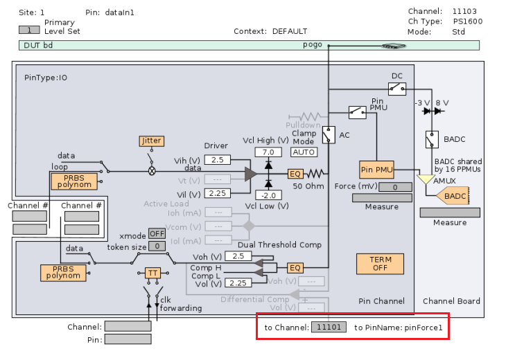
Ground sense status
Pin Scale 5000 channels support remote sensing of the ground connections via separate pins. In the hardware view, you can check if the selected pin has ground sense enabled, see the red box below. When the line is black, as shown, ground sense is enabled, otherwise the line is greyed out.
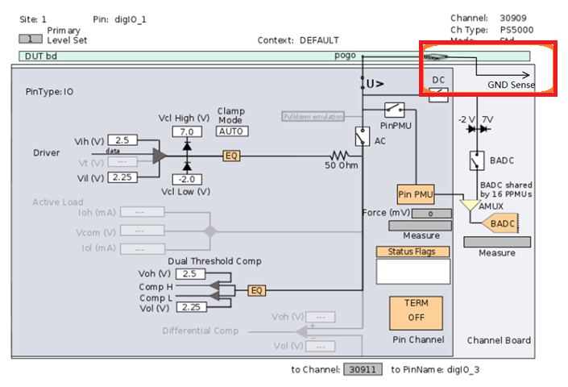
Driver setup
Click Vih or Vil in the Driver block shown as the figure below, the Driver setup window opens.
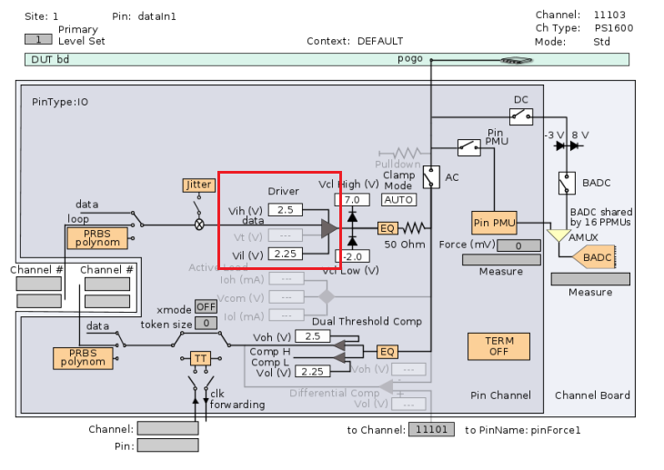
In this window, you can modify the driver levels.
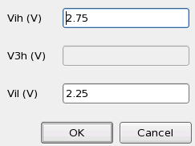
Clamp setup
Click Clamp Mode in the Clamp block shown as the figure below, the Clamp setup window opens.
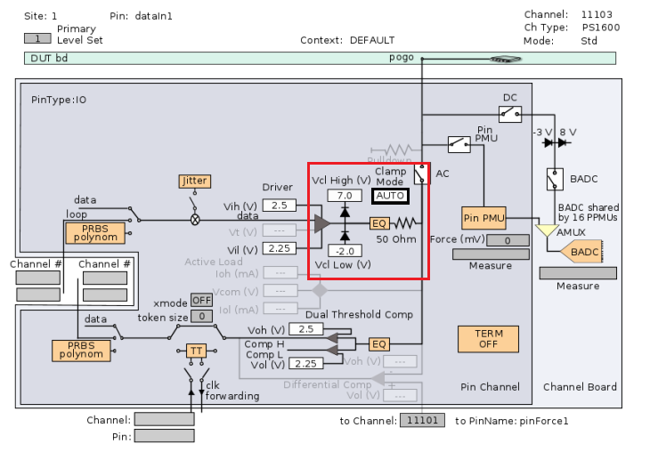
In this window, you can modify the clamp mode and clamp high/low voltage.
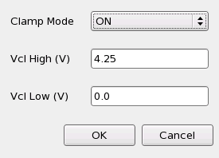
Termination setup
Clicking the TERM (termination) block shown as the figure below, the Termination Mode Setup window opens.
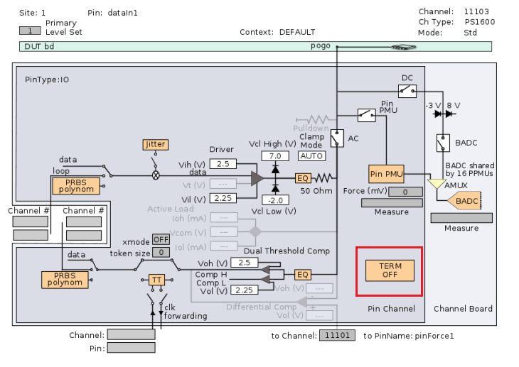
In this window, you can select the termination mode. The available modes are determined by the type of digital card which the pin is connected to.
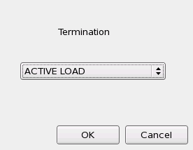
Note that changes to the displayed schematic diagram may occur, based on your choice of the termination mode. See the following example. The first figure below shows the diagram for a P-Channel with the Terminationset to OFF. The second figure below shows the diagram with the Termination set to Active Load.
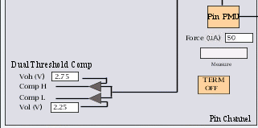
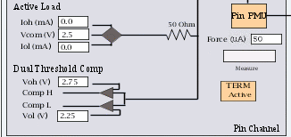
PMU and ADC windows
The following windows are accessed directly from the schematic diagram that is displayed in the Hardware view for a digital pin. Each window provides you with the capability to modify measurement parameters. After you have made the desired changes, click the Meas button. You can immediately see the effect of your changes on the measurement in the Result field.
Pass/Fail Pin DC Measurement
Clicking the Pin PMU in the schematic that is displayed in the Hardware view for a digital pin opens the window shown in the figure below. This window is used to set up a Pass/Fail DC measurement on the pin that you have selected in the Pin Browser. You can select either a Single Measurement or a Looped Measurement. If you select Looped Measurement, enter the loop rate in seconds in the field that appears. Configure the remaining parameters in the window as desired, then click the Meas button.
The result is shown in the Result field. The Force field and Measure field in the Hardware view also display the entered force value and the measured value. Execute the measurement online, the Force field shows the value actually downloaded to the hardware. That means, for the force value entered in the Pass/Fail Pin DC Measurement window and the value shown in the Force field, there is a slight difference within the level or current accuracy.
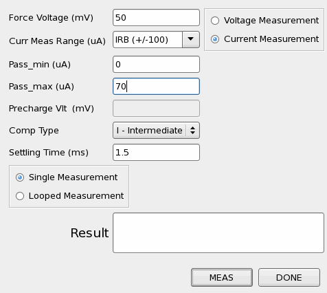
ADC Pin DC Measurement
When the BADC relay is open, clicking the BADC (Board ADC) in the schematic diagram displayed in the Hardware view for a digital pin opens the window shown in the figure below. Use this window to set up a DC measurement that will return a measured value for the pin you have selected in the Pin Browser. You can select either a Single Measurement or a Looped Measurement. If you select Looped Measurement, enter the loop rate in seconds in the field that appears. Configure the remaining parameters in the window as desired, then click the MEAS button. View the result in the Result field.
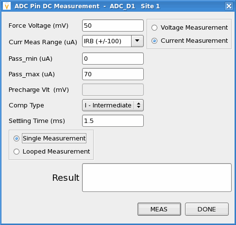
High impedance voltage measurements using the Board ADC
When the BADC relay is closed, clicking the BADC (Board ADC) opens the window shown below. This window allows you to perform voltage measurements using the Board ADC. Configure the parameters in the window as desired, then click the MEAS button. View the result in the Result field.
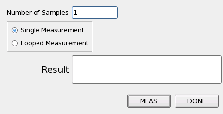
Functional changes
- Introduced before SmarTest 6.3.2
- SmarTest 6.5.0: Removed DC set field from DC measurement window.
- SmarTest 6.5.0: Added DC rail field.
- SmarTest 6.5.2: The high impedance voltage measurements with the Board ADC is supported in the Hardware view.
- SmarTest 6.5.3: The local DC rail connected to the Board ADC is highlighted in red if the Board ADC is connected to any digital channel in the current card cage.
- SmarTest 6.5.3: You can change the settings of the driver, clamp, and comparator of a digital pin in the Hardware view.